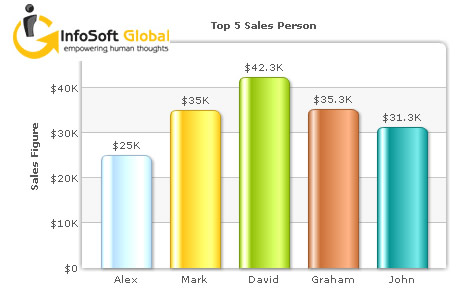
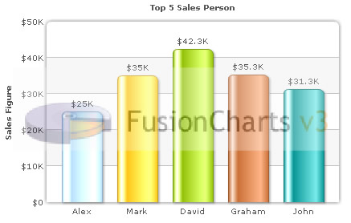

Loading external logo |
| You can load external logos at run-time to be displayed over the chart. The logos can be GIF/JPEG/PNG or SWF files that reside on the same sub-domain as the chart SWF. To load a logo, you use logoURL attribute of chart element as under: |
<chart yAxisName='Sales Figure' caption='Top 5 Sales Person' numberPrefix='$' useRoundEdges='1' bgColor='FFFFFF,FFFFFF' showBorder='0' exportEnabled='1' exportShowMenuItem='0' logoURL='logo_igpl.gif'> |
| This results in: |
|  |
| Configuring logo position |
The logo can be configured using logoPosition='TL' .. attribute to be shown in the following positions:
|
| Configuring logo opacity and scale |
| Once the logo has loaded, its opacity and scale can be configured as under: |
<chart yAxisName='Sales Figure' caption='Top 5 Sales Person' numberPrefix='$' useRoundEdges='1' bgColor='FFFFFF,FFFFFF' showBorder='0' exportEnabled='1' exportShowMenuItem='0' logoURL='logo_fc.gif' logoPosition='CC' logoAlpha='30' logoScale='150'> |
| This results in: |
|  |
| Linking the logo to external URLs |
You can even link the logo to an external URL by setting <chart ... logoLink='link in FusionCharts format'>. This link can open in same window, new window, pop-up windows, frames or even invoke JavaScript methods. |